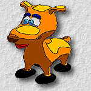
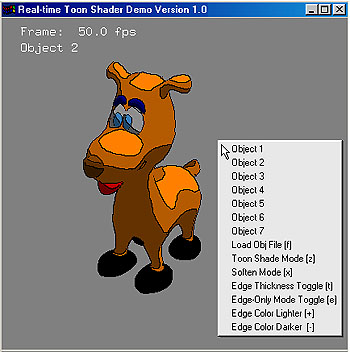

 toon demo version 1.0
Program code contributors:
Ping-Hay Lai
Yiu-Kei Cheung
Introduction
- This program demonstrates the ability to render cartoon style images from 3D geometric models in real-time on commodity PC. It uses the shader programmability of the current graphics accelerators to shade object and draw cartoon-style edges. Unfortunately, the current development (Nov 2002) of shader graphics hardware is still very limited and not yet standardized. This program is an attempt to utilize such limited platform to achieve one kind of non-photorealistic rendering. All codes are now implemented on top of nVidia extension of OpenGL (vertex shader, texture shader and register combiner).
This demo also allows you to load your own model (Alias|Wavefront .obj format only) and shade it in a cartoon style. You may freely use it as a tool for illustration purpose.
System Requirement
- Hardware: GeForce 3 or above, Pentium III or above, 128MB RAM
- OS: Windows 98/NT/2000
- Software: installed with nVidia extension for OpenGL, there should NOT be nv30 installed
(There seems to have a compatibility problem between nv30 and the development platform we used)Installation Instruction
- (1) Download the InstallShield of toon demo 1.0, toon-demo-1.0-install.zip,
(2) Extract the files and run "setup.exe"
- Note:
- To execute the demo, Windows 2000/XP users have to change path to the install path to start the demo in command line. This is because the InstallShield cannot successfully set the working path for Windows 2000/XP.
User Manual
 Instructions: (Move the mouse cursor over the above interface to see the function of each widget)
Contact Person